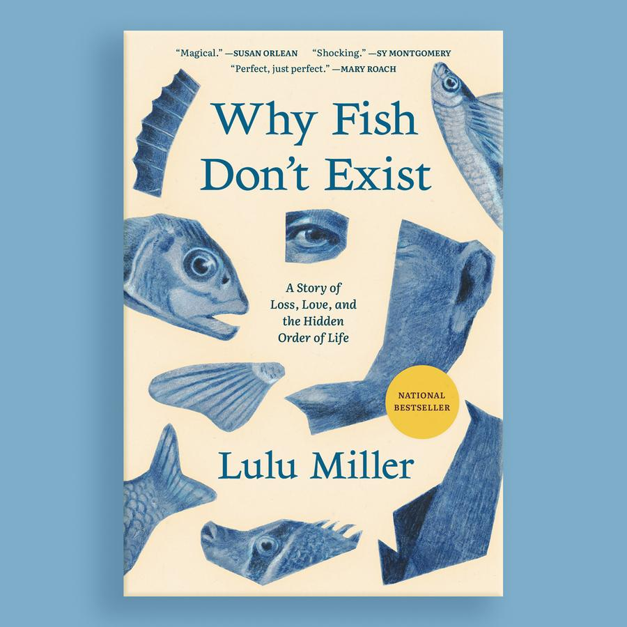

Why Fish Don't Exist: Lulu Miller
What interested me most about Why Fish Don’t Exist was not its argument about taxonomy, but its examination of how people construct
meaning in response to chaos. The book traces David Starr Jordan’s obsession with order alongside the author’s own search for coherence, which made me think about the limits of rational systems when they’re used as emotional scaffolding. Rather than celebrating resilience uncritically, the book raises uncomfortable questions about who gets erased when order is imposed too rigidly.
It complicated my understanding of perseverance by showing how the same drive to “make sense” can both sustain and harm.
Convenience Store Women: Sayaka Murata
This novel pushed me to reconsider how social norms operate beneath the surface of everyday life. Keiko’s attachment to the
convenience store isn’t framed as escapism but as a deliberate alignment with a structure that offers clarity and predictability. What made
the book compelling was its refusal to moralize that choice. Instead, Murata exposes how aggressively society polices deviation, particularly
for women, and how concepts like independence or ambition are often narrowly defined. The novel treats conformity and
nonconformity as equally constructed, forcing the reader to question which lives are considered legible or valuable.

Remarkably Bright Creatures: Shelby Van Pelt
Remarkably Bright Creatures uses an understated narrative style to explore grief, loneliness, and interdependence without
relying on spectacle. Knowing that Shelby Van Pelt is a CMC alum made the book feel personally resonant, but what stood out was its
structural patience: relationships develop slowly, and understanding arrives through accumulation rather than revelation. The novel s
uggests that healing is less about resolution and more about sustained attention—to others, to routine, and to shared spaces.
It reinforced my interest in stories where emotional depth is built through restraint rather than intensity.